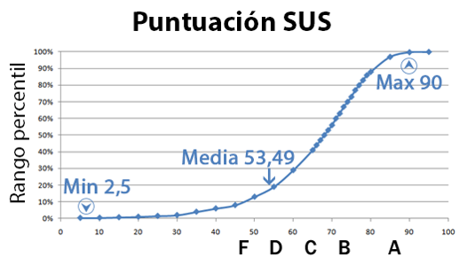
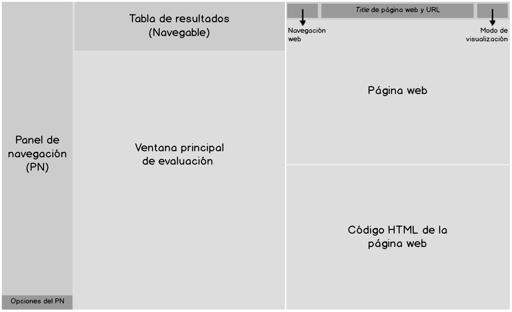
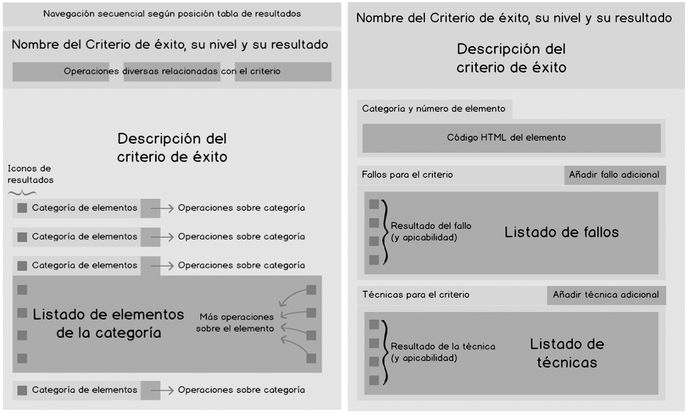
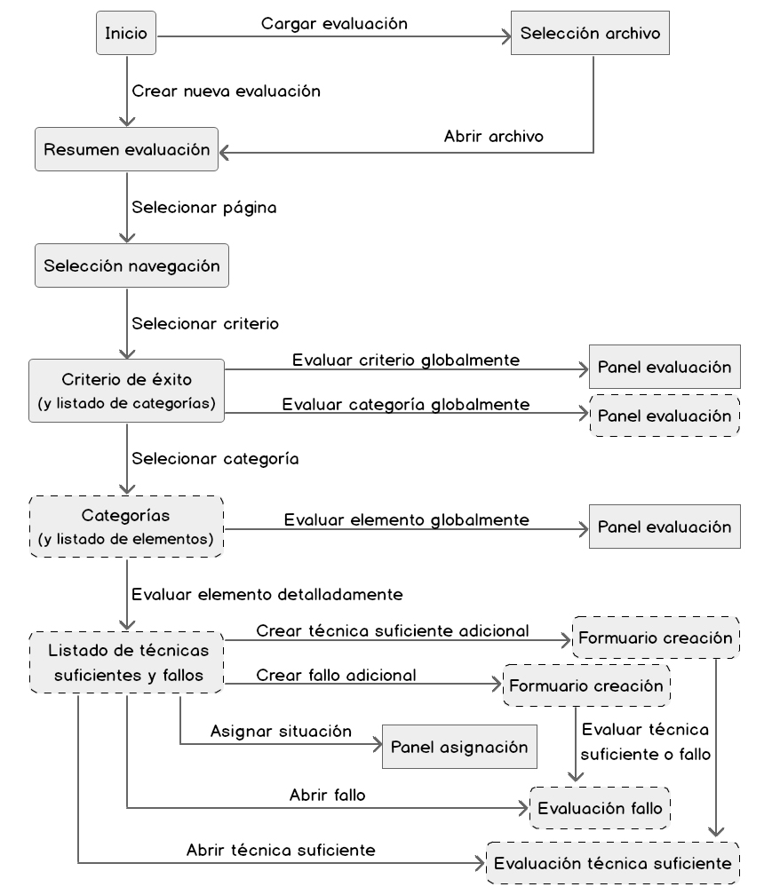
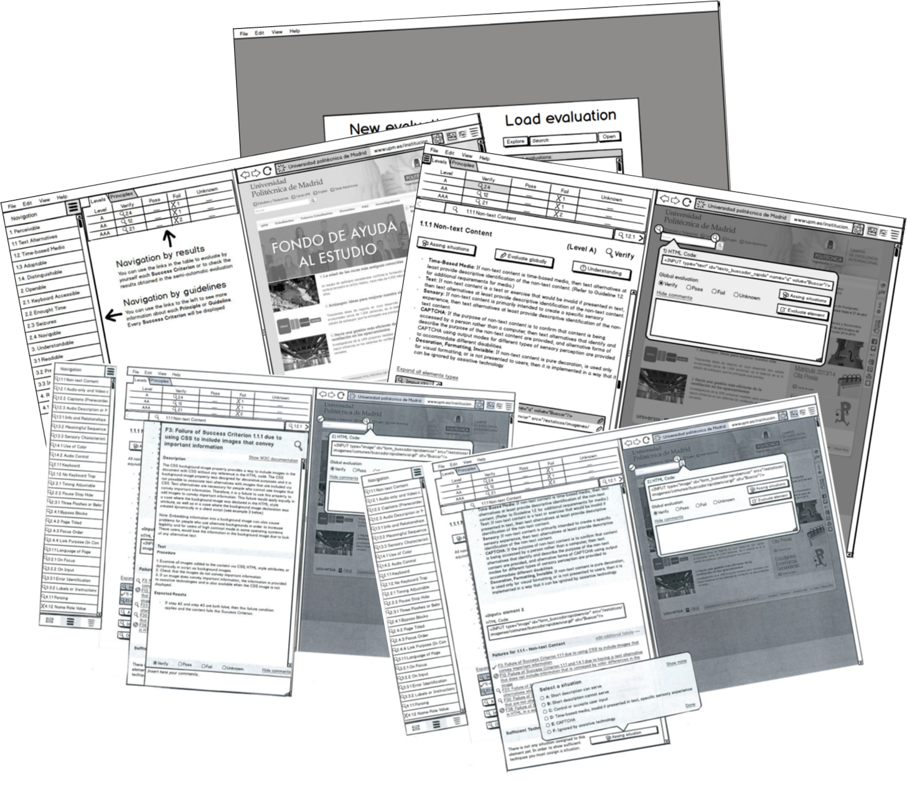
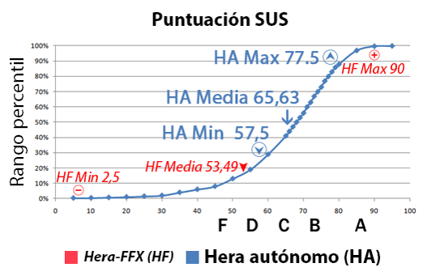
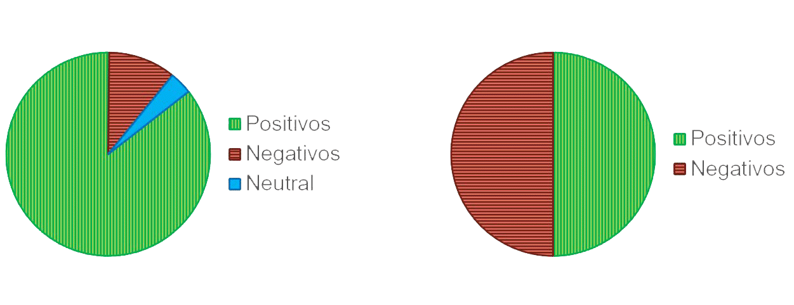
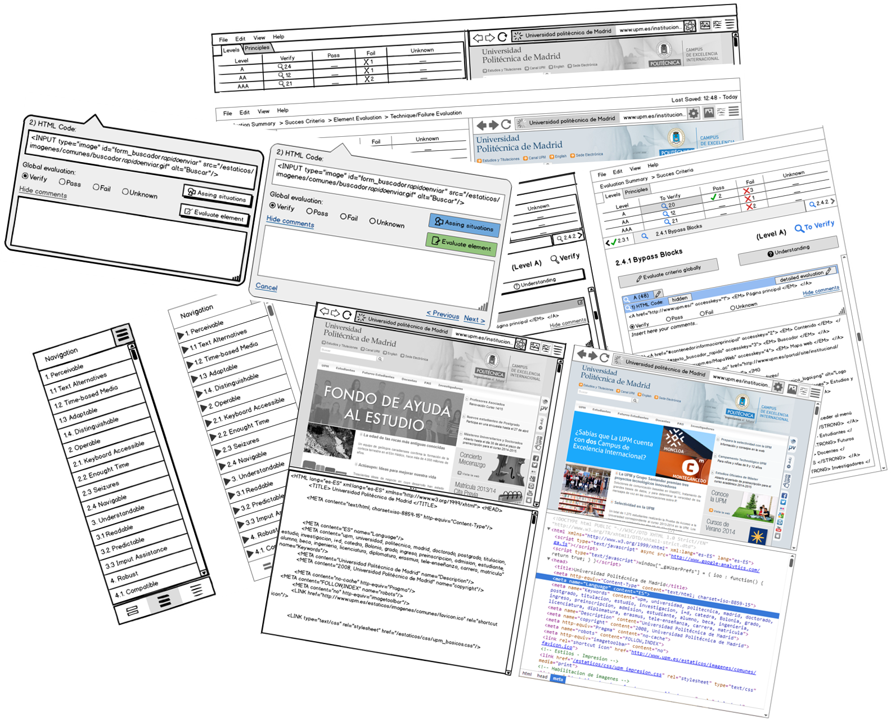

Standalone HERA
HERA is a semi-automatic accessibility evaluation tool originated from the Firefox plugin HERA-FFX
Hera-FFX usability problems
What made using a tool, which presents many of the features desired by web accessibility consultants, a tedious job? The answer was clear: a usability below average and clearly improvable.
But wait, how do I knew that? Well, I got to work and conducted a usability problems analysis
This analysis consisted of three parts:
- A System Usability Scale Satisfaction Survey
- An AttrakDiff Survey
- Comments from users
System Usability Scale Satisfaction Survey
Ten statements. Five positives and five negatives to which the user must respond on a scale from one to five what is his or her level of agreement with each sentence. This results in a score
The average score of more than 500 SUS studies is 68. Hera-FFX scored 53'5. According to the percentile range, Hera-FFX did not reach a D. Which means it failed the survey.
AttrakDiff Survey
Twenty-eight pairs of opposing concepts valued as positive or negative. Complicated Vs. Simple, Ugly vs. Attractive, etc.
The user indicates which concept is closer to his or her perception and how close it is.
Half of the concepts were positives and the other half negatives.
Comments from users
The comments were collected through free response questions. In general, those were negatives.
"It takes a too much time", "Too much clicks are needed", "The UI is ugly and obsolete" and "The tool is not friendly" are some examples.
Only one user, among 57 young Europeans, said positives comments.
As a result, I made a series of improvements proposals. Those proposals were focus on efficiency, automatisms, accessibility, help and feedback and graphic design.
Context of Use Analysis
This analysis consisted of three parts:
- Users
- Task
- Environment
Users
I needed to know which were their characteristic and necessities
I used Personas technique. It led me to set up two clearly defined user profiles:
- Andrea as an expert user
- Nicolas as an novice user
Task
I also needed to know what the tasks of users of this kind of tools usually are and how were organized. Being these tasks: Browse, begin an automatic evaluation, test success criteria, etc.
I designed two different scenarios with essentials tasks.
Environment
Although there were restrictions none of them were especially relevant to be mentioned at this point.
Low fidelity prototype
Before designing the low fidelity prototype, I proposed a layout scheme, which characteristics satisfied many of the needs, and a Navigation map in order to describe the IA and connect the interaction contexts.
Layout scheme
 Navigation map
Paper-based prototype
Now you can see some screens from the prototype used for the usability tests. It developed the scenarios. The user interacted with it by tapping the elements.
User tests
One facilitator and an observer conducted the user tests.
In the test, we studied the interaction of five people with the low fidelity prototype. Three of them were accessibility expert and two novice students.
We got ready the tasks list, the surveys, the observer sheet and we even made an evaluation protocol. Oh! There was a pilot test too.
Get to the point. Results
I'm going to keep the same structure in order to facilitate the comparison. Let's recap:
- The System Usability Scale Satisfaction Survey
- The AttrakDiff Survey
- The comments from users
System Usability Scale Satisfaction Survey
The Hera-FFX average scored was 53'5. Hera standalone got an average of 65'6.
This mean 7'5 points more, an improvement of 12% in the percentile range. Now it get slightly over C, which mean Standalone Hera pass it, and almost reach the SUS average.
But let's calm down. It is necessary to realize that these surveys were made with a considerable smaller sample. It is less representative. In addition, we are comparing a prototype with closed task and less time of use with a real tool with real tasks and more, more time of use.
AttrakDiff Survey
Remember pairs of opposing concepts valued as positive or negative, in which Hera-FFX obtained a 50/50.
With the low fidelity prototype, these figures changed up to 86% positive concepts, 10% negative concepts and 4% of neutral concepts.
Comments from users
The comments were collected in the same way, free response questions.
These comments were negative without any positive. We also collected some suggestions
Medium fidelity prototype
In this iteration, some errors were fixed. It is computer-based, so it included colors, a higher level of detail and was interactive.
At this point, the study finished. This prototype would serve as the basis for future design.
